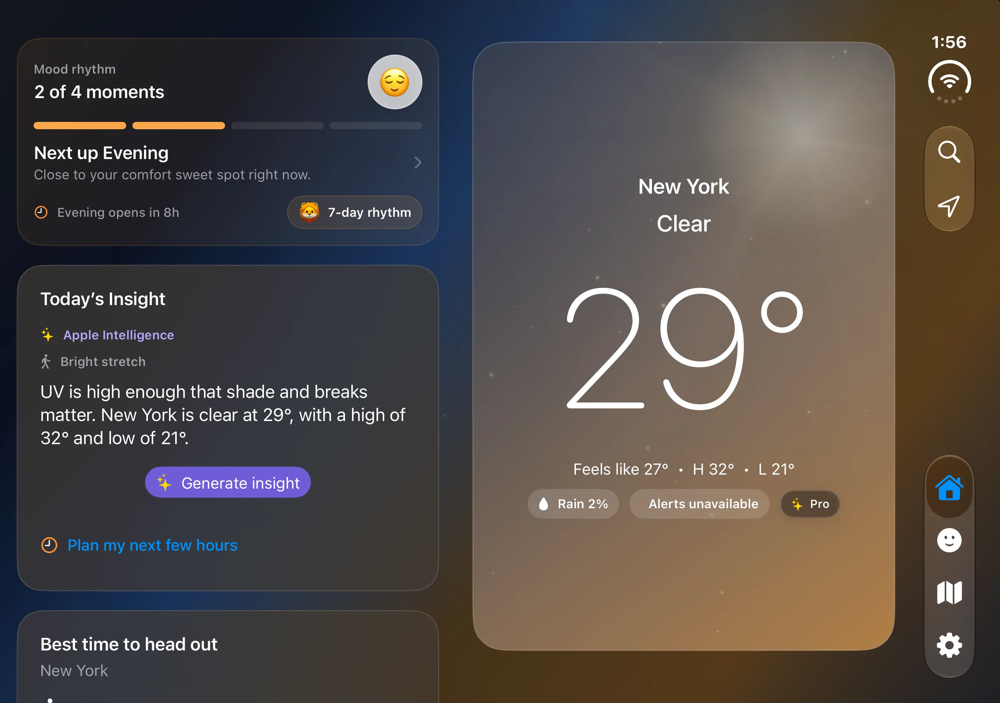
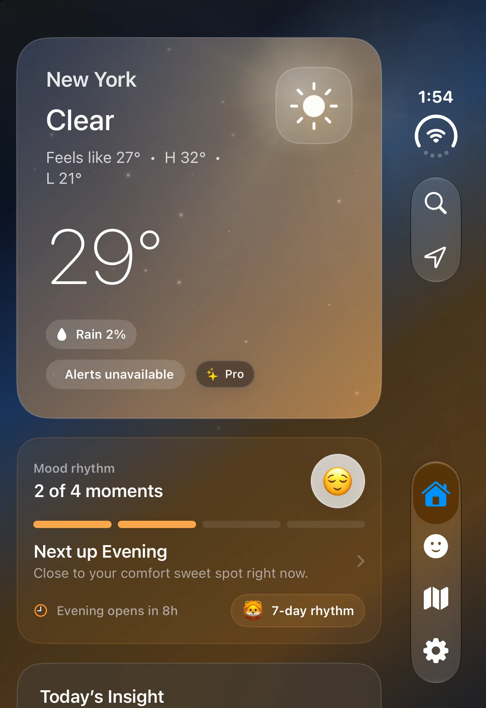
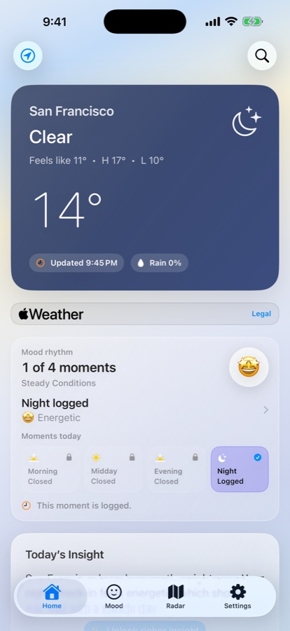
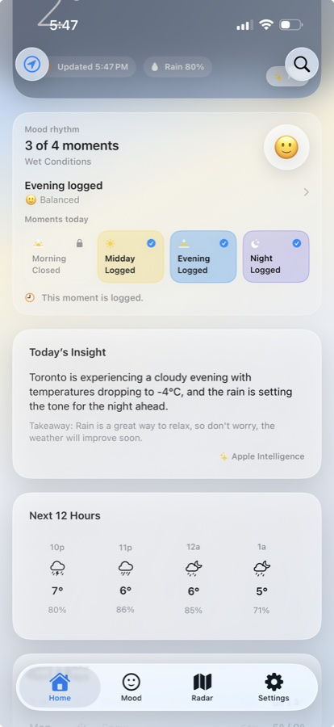
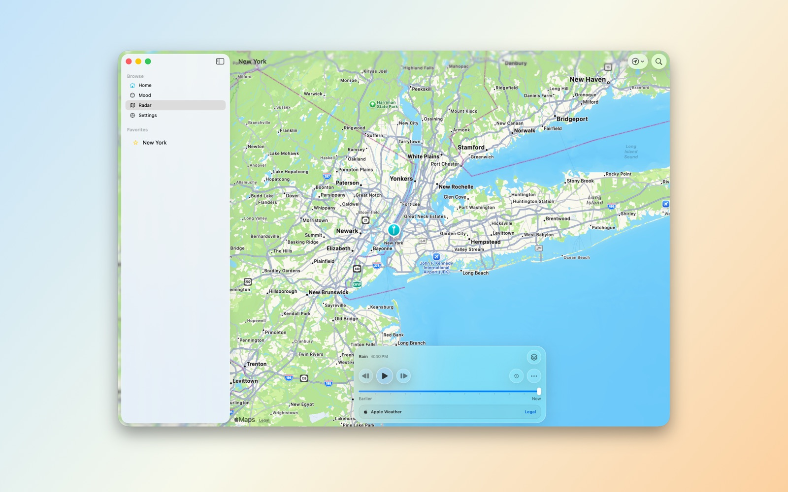

Clean forecasts
Current conditions, hourly and daily forecasts, feels-like temperature, and air quality in a clear layout.
Clear forecasts, rain timing, and a little help choosing when to head out.
A calm weather app for iPhone, iPad, Mac, Apple Watch, and Apple Vision Pro. Explore radar, official alerts, and practical daily insights, with optional Mood Rhythm check-ins.
Your day at a glance on iPhone. Select to see the full screenshot.
Coming in Aura Sky 1.2.4
Home and Radar adapt to the inner and outer displays on iPhone Duo. Keep a quick weather glance close, then unfold for a wider view.


The iOS 1.2.4 update has been submitted for App Review. Duo support will be available after approval and release. Check the App Store for availability on your device. About the Duo update.
New in version 1.2.3
Head Out compares the remaining full forecast hours today by rain chance, wind, and temperature comfort. A little forecast context for a walk, an errand, or time outside.
Head Out compares rain chance, wind, and temperature; it does not promise safe or rain-free conditions. Check the App Store for availability on your device.
The OS 27 update
Thoughtful updates for the OS 27 generation bring simpler Mood check-ins, easier access to saved places, and a practical look at the next few hours. Aura Sky continues to support OS 26.
See the App Store for the version currently available on your device. Screenshots show the Aura Sky experience; appearance and features can vary by version and platform.


Aura Sky keeps the main surface focused on practical weather, radar, and daily context, then layers in personal rhythm only when it helps.
Current conditions, hourly and daily forecasts, feels-like temperature, and air quality in a clear layout.
Explore recent precipitation and changing conditions on the map. Aura Pro adds animated playback and premium layers where provider coverage supports them.
Open “Plan my next few hours” for a summary of up to six available forecast hours, including temperature, rain chances, and wind. The basic summary is free.
Check in with five quick moods or the full picker. Add optional notes and activity tags, enjoy gentle ambience, and revisit Mood History and Awards.
See when rain or snow may start, ease, or continue with available minute forecasts. Without minute coverage, a labelled three-hour probability outlook keeps the difference clear.
Read provider-supplied summaries, safety information, and official details inside Aura Sky. Coverage and detail vary by provider and region.
Return to your saved forecasts, find places through Spotlight, and use supported Shortcuts to open a forecast or radar.
Keep weather close with widgets and Apple Watch complications. Head Out widgets are free; Aura Pro adds saved-place widgets and more customization.

Aura Pro is optional. Pricing, trial eligibility, and renewal terms are shown before purchase in the App Store purchase flow.
Apple Intelligence requires a supported device and feature availability. Basic forecasts, Rain Window, forecast planning, and Head Out remain available without Aura Pro.
The interface adapts across desktop, phone, tablet, wrist, and spatial surfaces while keeping weather easy to scan.
Desktop weather, radar, and planning context on Apple silicon.
Fast forecasts and location-aware daily weather.
Room for forecast, mood, and radar surfaces.
Glanceable weather, complications, and check-ins.
A spatial weather surface for the same Aura Sky experience.
Aura Sky is designed for everyday weather awareness. It is not a certified source for aviation, dispatch, navigation, safety-critical weather briefing, or operational decision-making.